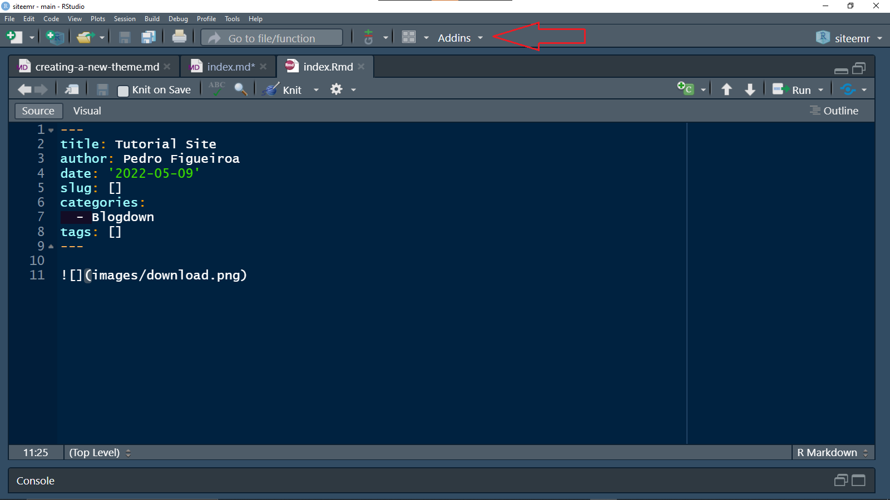
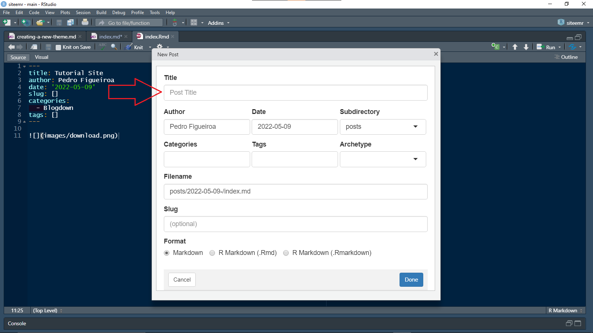
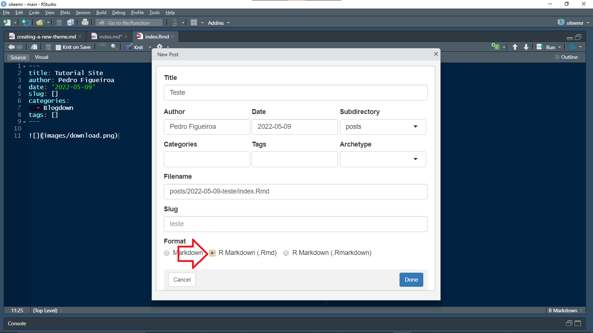
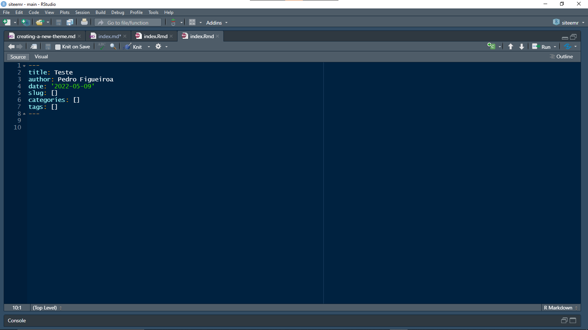
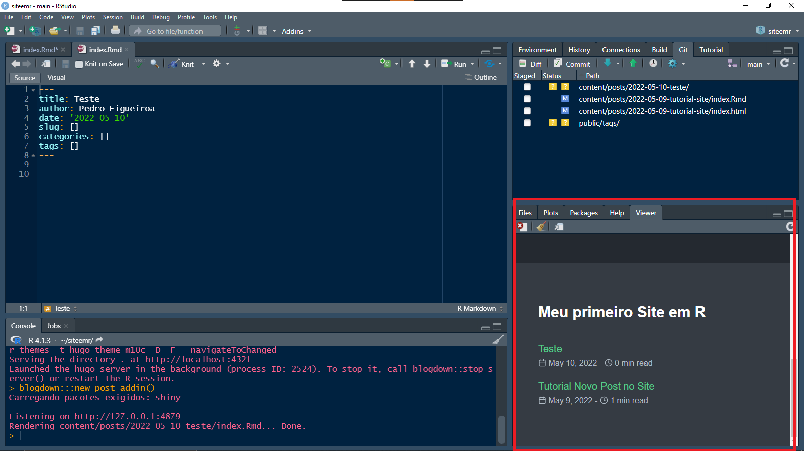
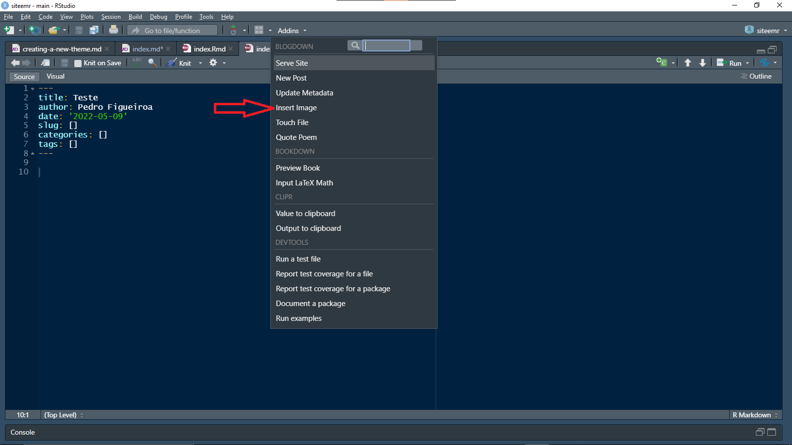
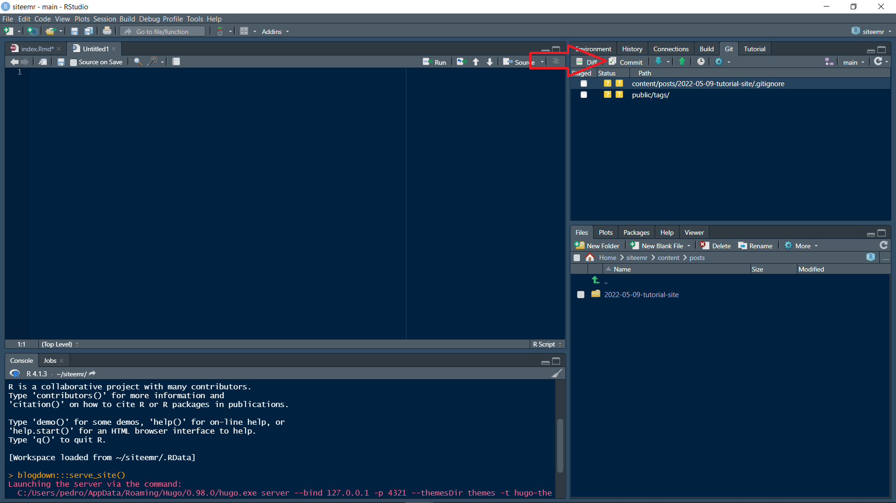
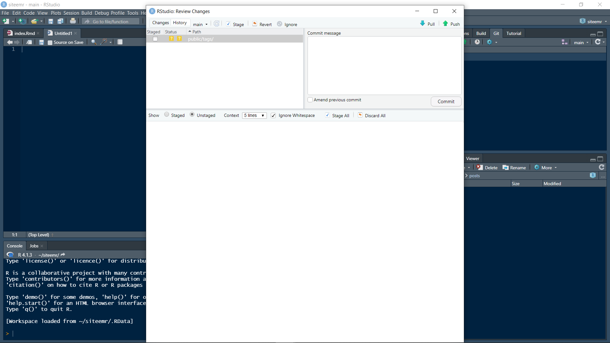
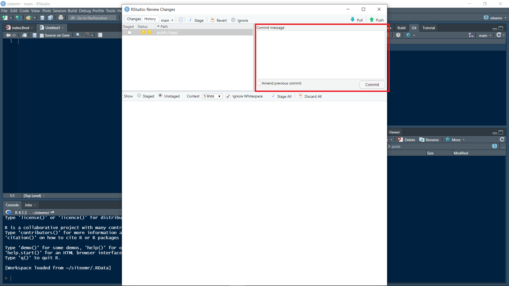
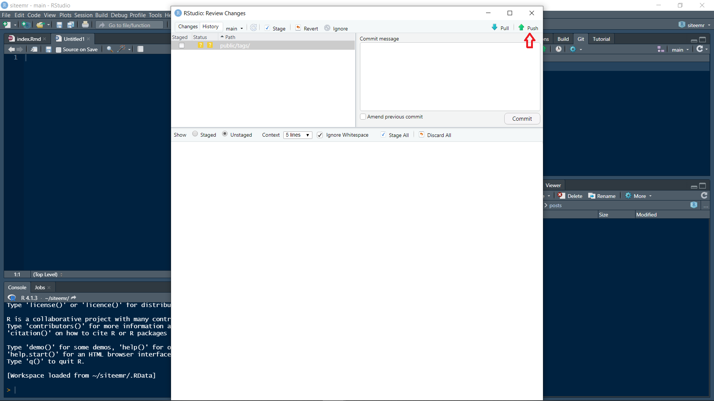

Pessoal então vou explicar para vocês como criar novos post no blogdown do R.
Em primeiro lugar você vai no seu R Studio e clique em “Addins”.

Agora vai abrir um caixa onde você pode editar as informações do site como o título do post, o autor, a data em que o post foi escrito. Você pode também adicionar Tags Nesse exemplo, eu alterei o título, o autor e a data do post.

Importante marcar R Markdown (.Rmd), ele vai dispor de mais funcionalidades para o post.

Pronto agora é só digitar aqui no R o que você quiser e para ver como o conteúdo vai ficar é só digitar no console -> blogdown::serve_site(), que no viewer você vai conseguir ver
 
Caso queira colocar uma imagem é só ir novamente em “Addin”s e selecionar “Insert Image”.

Feito Isso você salva o site no disquete acima e agora faremos o processo de commit. Na parte superior direita você vai em Git.
Agora vamos em Commit.

E vai abrir essa tela.

Nessa caixinha você vai selecionar as mudanças que você fez no site e marcá-las.
Após selecionadas as mudanças, um ponto importante é tente fazer aos poucos, porque o processo é pesado e lento então ao fazer muitas mudanças pode demorar muito. Digite a mensagem para commit, a mensagem que você digitar você vai ver lá no github e vai ficar simples de saber qual commit alterou o que no seu site. E depois clique em commit!

Após o commit ficar pronto, clique em push.

Pronto pessoal, agora é só acessar o site e verificar as alterações. Caso vocês entrarem no site e as atualizações ainda não estejam ativas, só esperar um pouco que pode demorar para salvar as atualizações.